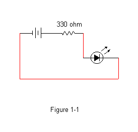
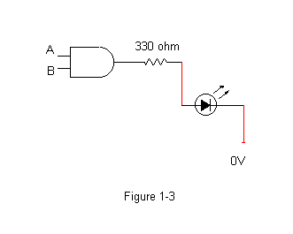

CIS 351 |
Lab 2: Introduction to Digital
Logic |
Fall 2018 |
Author: Prof. Greg Wolffe.
Pre-lab
Questions 1 through 4 are due when you arrive at lab.
Overview
The purpose of this lab is to provide a simple
introduction to basic electronics, and to investigate the principles
of Boolean algebra. Please pay special attention to terminology,
safety issues, and standard lab practices.
- Work your way through the following brief tutorial.
- Submit a detailed lab report (one per group) that includes your
answers to the numbered questions.
- Chapters 1 - 3 describe the basics of digital logic. (See also
Appendix C located on the companion CD of the Patterson and Hennessy
textbook.)
- This site explains how to
determine
the number of Ohms a resistor provides based on the colors of its bands.
- Pinouts for the chips in your
breadboard kits.
Equipment
Familiarize yourself with the following components of your lab
equipment toolbox:
- Avoid touching the pins.
- Never connect an input signal to a CMOS chip when the power
is off. In other words, make sure there is power flowing through
pins 7 and 14 before connecting input wires to a power source.
- Do not remove power if an input signal is still present. In
other words, disconnect power to your inputs before disconnecting
power to the chip or breadboard.
- Unused inputs may pick up stray signals. Stray signals
can cause rapid oscillation in logic state, consuming excessive
power. If chip behavior is erratic, or the chip becomes very hot,
connect unused inputs to ground.
- Align the leads (pins) of the chip with the contact points on
each side of the center, such that each pin is isolated.
- Gently press the center of the IC until it drops into
position.
- Remove the IC by using the chip extractor to carefully pry it
up until it can be lifted free.
Creating a Simple Circuit
Before creating your first circuit, there is something you need to
understand about LEDs: Normal, incandescent light bulbs produce
light by resisting the flow of electricity. This resistance produces
heat, which causes the filament to glow. When you drain a flashlight
battery, most of the energy in the battery has been converted to heat.
In contrast, LEDs produce light by exciting electrons causing them to
release photons ("light particles"). This process uses use very
little energy. Consequently, LEDs do not resist the flow of
electricity. When there is nothing to resist the flow of electricity,
the amount of current (think "number of electrons per second")
increases. You may remember the following formula:
V = IR
Or, in other words, voltage equals current (in amps) times
resistance (in Ohms).
- Normal List
- Suppose you hooked up a red LED with a resistance of 1 micro Ohm
(1x10-6 Ohms) directly to a 5 volt battery. Using the formula above, how much
current will be drawn from the battery?
The power supply cannot produce that many amps. However, the 1 amp
that the power supply can deliver is enough to damage the LED and
(more importantly) the breadboard. Therefore, always add
a resistor as shown in Figure 1.1 to limit the amount of current
through the diode to about 10mA.
- LEDs typically use a fixed amount of energy, referred to as the
"voltage drop". A red LED has a voltage drop of 1.7V, leaving 3.3
volts to "push" the current through the resistor. How strong of a
resistor should you add to the circuit to limit the current to 10mA?
- What value resistor should you use for a green LED with a
voltage-drop of 2.1 volts?
- What are the color codes for the resistors in the preceding
questions?
Now that you understand the importance of using resistors, construct
the circuit shown in Figure 1-1 and described below.

- Connect the power supply to the positive and negative terminals
on the breadboard.
- Connect each terminal to a distribution bus (one of the
horizontal rows).
- Insert the appropriate resistor into the breadboard and connect it to
positive.
- Insert an LED and connect the resistor to the LED.The
LED is a diode, and will only work when the longer wire is connected to a path to positive voltage.
- Connect the LED to ground.
- When the circuit is constructed correctly, the LED will glow
visibly whenever power is applied. If it glows dimly, you chose the
wrong resistor.
Using Integrated Circuits
Integrated circuits typically contain multiple logic gates and hence
provide multiple input and output connections (called pin outs).
Find an IC labeled 74HCT08 - this is a quad 2-input AND gate.
That means there are four AND gates within the chip, each of which
takes two inputs. Each AND gate implements the Boolean AND
function.
If the chip is positioned with the notch to your left, then pin
number 1 in the lower-left corner. The remaining pins are numbered
sequentially and counterclockwise.
Integrated circuits need power in order to open and close the
transistors that implement the gates they contain. Pin 14 (in the
upper-left corner) is called VCC. This is where you
connect the source voltage. Pin 7 (in the lower-right corner) is where
ground voltage is applied. In other words, Pin 14 must be
connected through a breadboard terminal and power distribution strip
to the positive terminal of the battery. Likewise pin 7 must be
connected to the negative terminal of the battery. Never place a
load (current and voltage) onto a pin unless the chip is also powered
through pins 7 and 14.
The figure below shows the pinout for chip 74HCT08 --- a chip
containing four 2-input AND gates. Pins 1 and 2 are the input to the
first of the four AND gates, pin 3 is the output. Likewise, pins
4 and 5 are inputs to an AND gate with output pin 6, pins 9 and 10
(input) connect with pin 8 (output), and pins 12 and 13 (input) go
with pin 11 (output).

Your kits also include the following integrated circuits:
| Designation |
Operation |
| 74HCT00 |
NAND |
| 74HCT02 |
NOR |
| 74HCT08 |
AND |
| 74HCT32 |
OR |
| 74HCT86 |
XOR |
They are all quad 2-input ICs - meaning there are four gates within each chip, where each gate takes two input.
This page shows the pinouts for these chips.
To investigate the operation of an integrated circuit that
implements the AND function, construct the following circuit (Figure
1-3 gives the schematic):

- Carefully insert a 74HCT08 IC into the break in the breadboard so
that each pin sits in its own strip.
- Connect the power supply between pins 7 and 14, with the positive
terminal on pin 14.
- Connect a 330-ohm resistor from output pin 3, then to an LED,
which is then connected to ground.
- Connect two wires to the input pins 1 and 2. Using these
wires, connect both inputs to 0V (ground) and record the logical state of the
LED. (In other words, is it on or off?) Then connect both inputs to 5V (HIGH) and record the logical
state of the LED. Then connect pin 1 to LOW and pin 2 to HIGH and
note the LED. Finally, swap the input wires and record the state
of the LED.
Perform the following:
- Construct a truth table from your observations.
- Take the wires attached to pins 1 and 2 and leave the other
ends floating in the air. Describe the effect of having these
"floating inputs". (To get some more interesting behavior, grab the
floating ends with your fingers and wiggle them.)
Switches
You may find it convenient to use switches to control whether an input
wire has a "1" or a "0" on it; however, as you noticed, floating
inputs can cause erratic behavior. In the Resources section of the
course web page, the page Using Switches
explains how to correctly use the two types of switches in your kit.
- Add switches to the circuit you built (the one shown in
Figure 1-3). You may use either dip switches or momentary
switches. Demonstrate to the instructor or lab assistant that
your circuit works correctly, then attach a photo of your
circuit to your lab report.
Experiment
- Get a random IC from me. Replace your 74HCT08 with the new
chip. Construct a truth table from your observations. Identify the
type of gates the chip contains. (Your writeup needs to include the
letter on the chip.)
Creating a more complex combinatorial circuit
Digital logic is implemented by using basic logic gates as building blocks
to create more complex circuits. A combinatorial circuit is a set
of gates whose output function depends only on the values of its current
inputs (i.e., there is no storage or feedback involved in the system).
The following circuit is a common combinatorial circuit.
You will need 2 quad NAND IC's (74HCT00), 2 resistors, and 2 LEDs
to construct it. I suggest using DIP switches in the "pull-down"
configuration to control the values of A and B. Remember to use 4.7K
ohm resistors for your switches.
-
Connect inputs A and B to NAND gate 1.
-
Connect the output C of NAND gate 1 and input A to NAND gate 2. Connect
the output C and input B to NAND gate 3. Connect the output C of
NAND gate 1 to both inputs of NAND gate 4. Designate the output of
NAND gate 4 as Y.
-
Connect the output of NAND gate 2 and the output of NAND gate 3 to NAND
gate 5. Designate the output of NAND gate 5 as X. See Figure
2-3 below.
-
Connect two LEDs as before to both outputs Y and X of the circuit.
Place the LED for output Y to the left of the LED for output X.
-
Apply power and test the circuit.
-
Determine the truth table from observation. Place the column
for
Y to the left of the column
for X. In other words, treat YX as
a two-bit number.
-
Using your observations as a guide, describe what simple operation
this circuit implements. (Hint: Place the LED for output y
to the left of the LED for output x.)
- Demonstrate your circuit to the instructor (or lab assistant).